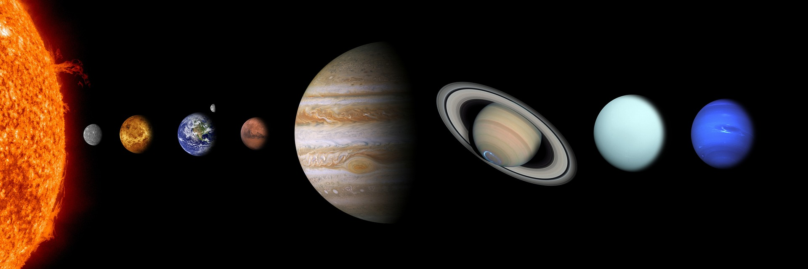
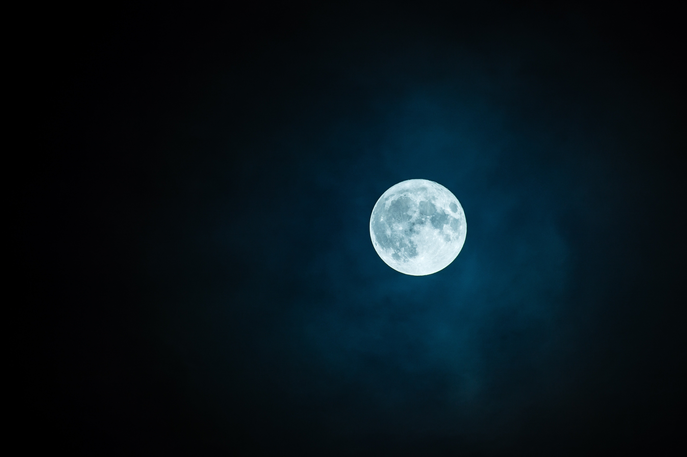

OUR SOLAR
SYSTEM
Travel from the Sun to the planets, visit the Moon and discover how Earth fits into the enormous universe.

OUR SOLAR SYSTEMWhat is the Solar System?
Our Solar System is made up of the Sun and everything that travels around it, including eight planets, dwarf planets, moons, asteroids and comets.
Meet the Sun.
The Sun is a star made mostly of hot gases. Its light and heat make life on Earth possible, and its gravity holds the Solar System together.
A family of planets.
In order from the Sun: Mercury, Venus, Earth, Mars, Jupiter, Saturn, Uranus and Neptune.
This is Earth.
Earth is the third planet from the Sun. It has liquid water on its surface and an atmosphere that helps support life.
The Moon.
The Moon is Earth's natural satellite. It travels around Earth and shines because its surface reflects light from the Sun.

EARTH'S MOONWhy does the Moon change shape?
As the Moon orbits Earth, we see different amounts of its sunlit half. These changing views are called phases.
Earth is always moving.
Earth spins on its axis, giving us day and night. It also travels around the Sun once each year.
Explore. Observe. Ask questions.
Remember: never look directly at the Sun, even through binoculars or a telescope.
You've explored
our universe.
Can you name the eight planets, explain why the Moon shines and describe what causes day and night?
RETURN TO PRESENTER VIEW →